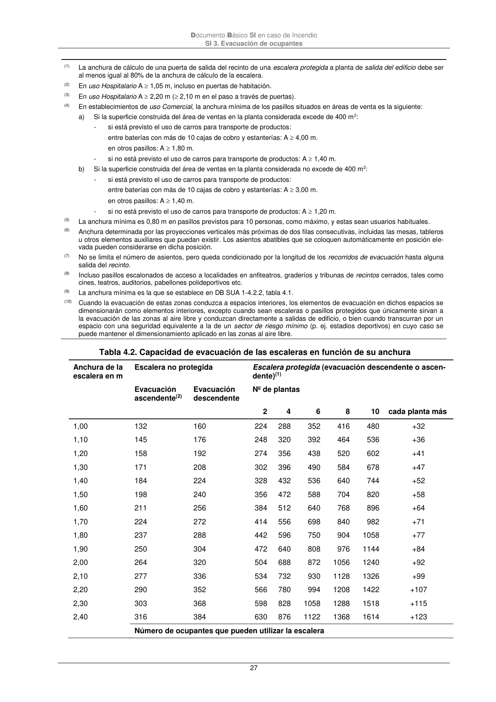
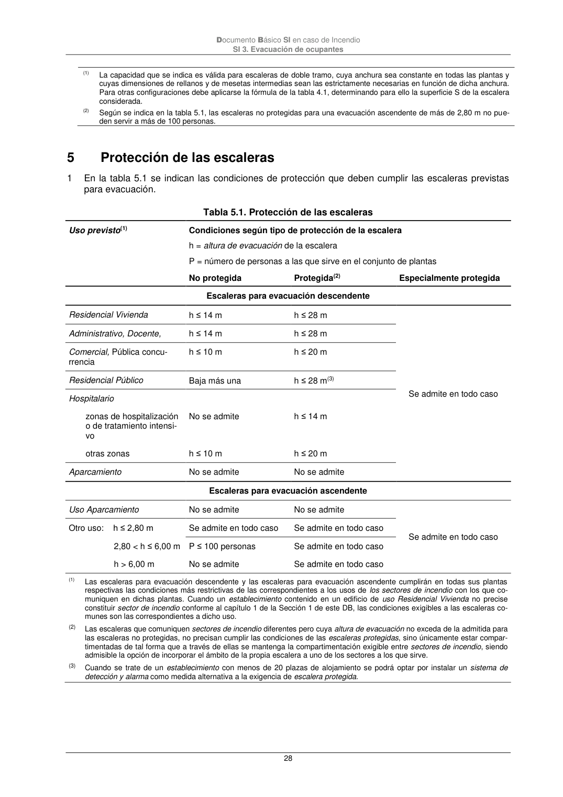

DB-SI · Número de ocupantes que pueden utilizar la escalera · versión 2025-03-04 · capa oficial
Formatos: JSON compacto · Markdown · PDF fuente
Ámbito del documento · texto del ámbito · documento y tablas
ID técnico a0062 · PDF pág. 27-28 · jerarquía no validada por persona · contrastado con el literal de la página 27 (candidato tipográfico); no validado por persona · padre: a0053
Número de ocupantes que pueden utilizar la escalera Documento Básico SI en caso de Incendio SI 3. Evacuación de ocupantes 28 (1) La capacidad que se indica es válida para escaleras de doble tramo, cuya anchura sea constante en todas las plantas y cuyas dimensiones de rellanos y de mesetas intermedias sean las estrictamente necesarias en función de dicha anchura. Para otras configuraciones debe aplicarse la fórmula de la tabla 4.1, determinando para ello la superficie S de la escalera considerada. (2) Según se indica en la tabla 5.1, las escaleras no protegidas para una evacuación ascendente de más de 2,80 m no pue- den servir a más de 100 personas. 5


PDF fuente redistribuible: copia fiel enlazada en esta página (SHA256 verificado).